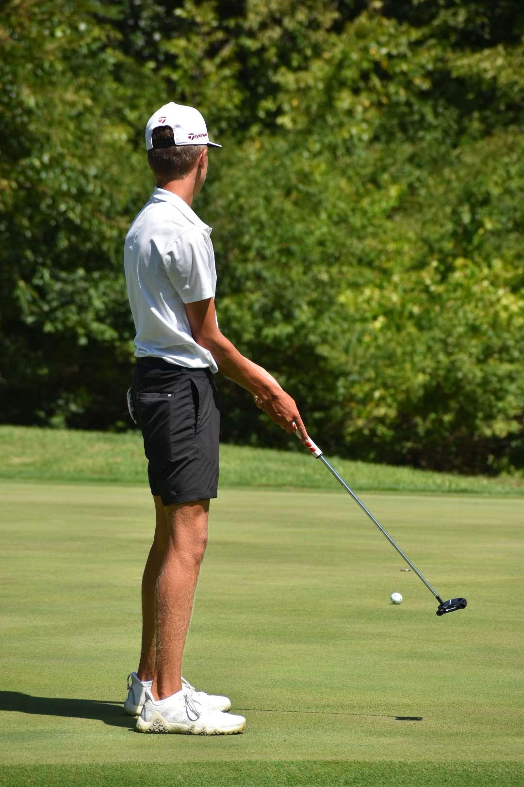

I have been playing and type of sport pretty much since I could walk. I was big into baseball when I was really young, but as I have gotten older I have started to like basketball, and golf a lot more. Obviously sports aren't cheep because of the equipment. Whats funny is when I am playing in any of my sports I like to look good. I go by the moto "Look good. Feel good. Play good" I like having all of the accesories I can have. Sports have played a HUGE role in my life. They are the reason I want to go to school, I like being able to put on a show for my hometown any chance I get to.
| Baseball | Helmet, Glove, Cleats |
|---|---|
| Golf | Clubs "Driver, Woods, Irons, Putter" Bag, Balls, Shoes |
| Basketball | Shoes, Bag, Ankle Brace, Tape |
I started playing basketball at a really young age. I never really thought that I would care for it, as much as I do now. Funny story I almost quit my eighth grade, and freshman year. But when I got to high school I was talking to the coach and he said he had big plans for me. Halfway through my freshman year I got pulled up to play varsity which doesn’t happen much. I started to get really good over the years and even attended a few college camps, if it weren’t for the coach, letting me know that I was going to have a future in the program, I probably would’ve just given up on the sport.
Throughout my whole life, I only played the main sports. You would think of football, basketball, and baseball. I planned on playing football, my whole high school career. But as you know life can throw unexpected curveballs at you my six grade summer going into seventh grade I was ran over and I had to have emergency surgery on my leg. Therefore my dad said I can play football anymore because it was too big of a risk so the summer going into my freshman year I found golf, I’ve learned to love the game it is now my favorite sport, and only starting three years ago. I’ve gotten really good at Golf and possibly have a chance to go to state my senior year.
I’ve been playing baseball since I was three years old I started off of the T-ball league and over the course of the years made it up to the varsity team. My dad has always been pushing me to become this really good baseball player it over the years it to worked. I just put so much time into the game, that I started to pull away from the sport I never wanted to be around it because of all of the high expectations because my whole family was a baseball family. But I’ve stuck with it over the years because it be too hard to quit. I’ve put way too much time in to the game.